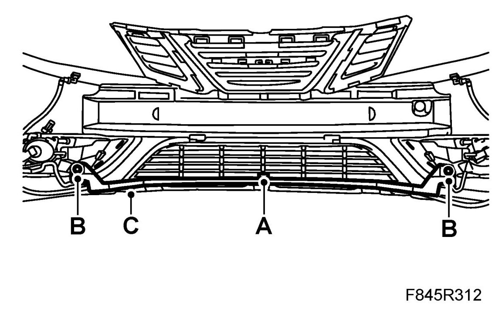
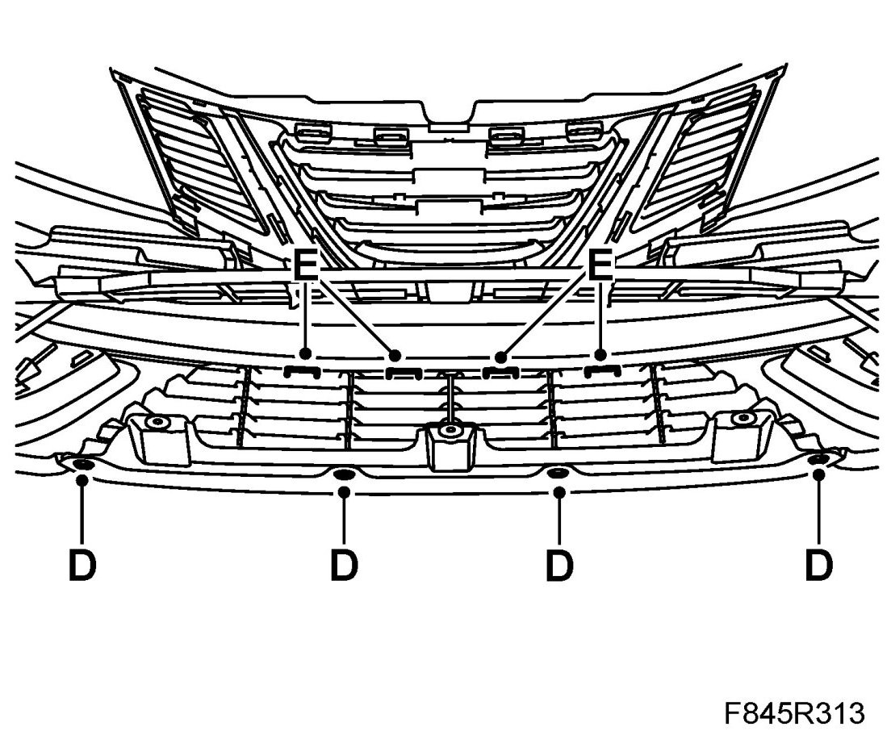
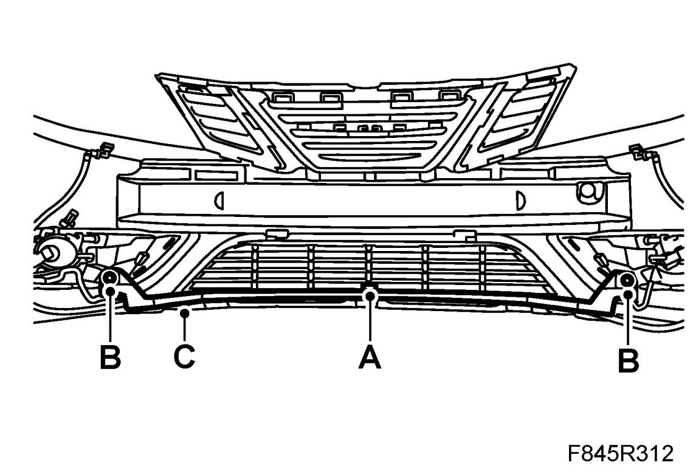

Lower Grille, Aero
Lower Grille, Aero
To remove
1. Raise the car.
2. Remove the front bumper shell.
3. Remove the lower grille:
- Detach the outside temperature sensor (A).

- Remove the screws (B) for the cable ducting (C) and fold it aside.
- Drill out the rivets (D).

- Press in the lock tabs (E) so that they release from the bumper shell.
- Lift out the lower grille.
To fit
1. Fit the lower grille:
- Position the lower grille on the bumper and guide in the lock tabs (E).
- Fit the rivets (D).
- Refit the cable ducting (C) and fit the screws (B).

- Fit the outside temperature sensor (A).
2. Fit the front bumper shell.
3. Lower the car.